- Article Exchange
- ILLiad/Odyssey
- FTP
- Clio
- Relais
Complete Interlibrary Loan Scanning
and Image Treatment WorkFlow System
...better image quality, fewer errors, and easier operationIn the early days of digital interlibrary loan and digital document delivery, the available software was simple and image quality expectations of requestors were low. ‘Times have changed. The demand for faster workflow delivery and perfect, printer-ready images has made the current software environment complex, creating significant challenges in training new employees. BSCAN ILL simplifies existing processes and produces perfect, printer-ready images.
BSCAN ILL starts by eliminating the need to manually enter requestor information. BSCAN ILL automatically reads the information that is required by interlibrary loan document delivery software from scanned pull slips, not only saving time but also eliminating human error.
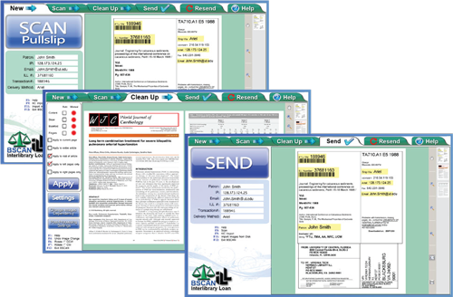Articles are scanned using one of a family of high speed fade-up scanners: Click Mini, Click, and Bookeye 4 V3, V2 & V1. By eliminating the constant book flipping required by flatbed scanners, these face-up scanners are three to five times faster than the fastest face-down scanners, and they do not cause book spine damage. For low volume ILL operations, BSCAN ILL also runs BookEdge flatbed scanners, employing their book edge feature and a faster mode that scans two pages at a time.
Once articles are scanned, BSCAN ILL’s powerful image treatment capabilities automatically eliminate skew and remove unwanted black borders, fan and gutter.
Finally, BSCAN ILL automatically sends requests through ILLiad/Odyssey, Ariel, RAPID, Clio, Article Exchange, Relais, FTP, and e-mail and can notify ILLiad/Odyssey in each case, all without any need for further human intervention. Resending articles is also a snap.
BSCAN ILL Capture Workflow
Improves Quality & Performance, Reduces Errors and Simplifies
Identify Article & Requestor
BSCAN ILL automatically captures data directly from pull slips — less keying means fewer keying errors.
BSCAN ILL reads the requestors name, the delivery method, and IP address from the pull slip and uses this information to automatically the appropriate document delivery software. After the article is sent, BSCAN ILL updates your document delivery software automatically. No extra keystrokes are necessary.
Scan Article
Scan two pages at a time, using the keyboard to delete unwanted pages. An optional foot pedal is available for even faster scanning. Once scanned, the article is passed to the automatic image treatment stage.
Choose from these Scanners
and Get Special Bundle Pricing
- 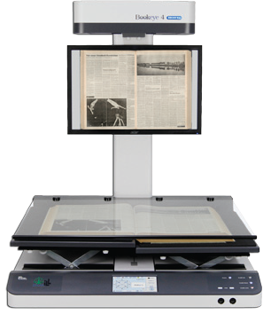
Bookeye 4 V1
25 x 33.5”
- 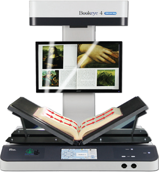
Bookeye 4 V2
18 x 24.4”
-
Bookeye 4 V3
15.3 x 18.9”
- 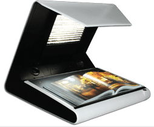
Click
22 x 16”
-
Click Mini
12.3 x 19.2”
- 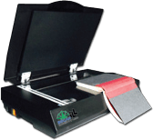
Book Edge
11.8 x 17”
- 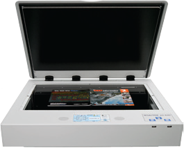
WideTEK 25-600
18.5 x 25”
Automatic Image Treatment
BSCAN ILL automatically locates the content on each page, clips the content, creates a preset margin for consistency, and deskews and corrects curvature when necessary. When completed, the treated article images are passed on to the manual review stage.
Manual Review & Correction
This stage can be run after each article is scanned, or for greater efficiency, several articles can be scanned in sequence, automatically treated, queued up in this stage and reviewed at one time.
Send & Route
Each article is automatically sent via the delivery method specified. If an ILL department is using ILLiad and Odyssey to track completion and perform billing-related operations, BSCAN ILL can be configured to notify Odyssey that the article was sent even if it wasn't sent by Odyssey.
Resend
BSCAN ILL is capable of storing articles for a configurable number of days after they're sent. If an article must be resent, it can be opened and sent right away or be edited first, for example by adding or deleting pages.
Capturing Content Deep into the Book Fold
Bound journals often have content deep into the book fold. It is quite difficult and sometimes impossible to capture this content with a typical flatbed scanner or photocopier.
There are three methods for effectively capturing this content:
- Scanning in the direction of the curve and reducing the scanning speed at the book fold — Bookeye 4 V3, V2, & V1 scanner models
- Capturing the left and right pages with two separate cameras positioned at ideal angles — Click scanners
- Using a flatbed scanner with a book-edge feature — BookEdge scanner
Bookeye 4 scanners employ the first method, which requires high resolution optics. Bookeye 4’s left-to-right scanning allows it to follow the contours of virtually any book. allowing it to capture deep into the book fold and decompress the compressed content. This feature combined with its advanced lighting system and superior optics also allows the Bookeye 4 to produce better quality 600 dpi images than any other book scanner available.
The second method is employed by Click scanners, which have two cameras. Both the Bookeye 4 and the Click are face-up scanners, which are faster and easier to use than face-down scanners, while our BookEdge has the lowest initial cost.
Bookeye 4 and Click scanners both have laser curve sensor systems that allows them to easily straighten out the worst curves and produce clear, professional quality images.
Scanning in the direction of the book curve and reducing the scan speed at the book fold for capturing content deep into the book fold.
Two white LED light bars sweep across the material, providing excellent illumination.
BSCAN ILL Bookeye 4 Station with optional display monitor on neck.BSCAN ILL with Click captures the left and right pages with two separate cameras positioned at ideal angles.
An array of 420 individually aimed white LED lights produce bright, evenly distributed illumination from above and behind the scan bed, thus avoiding reflection.
 BSCAN ILL Click Station
BSCAN ILL Click Station
BSCAN ILL uses a flatbed scanner with a book-edge feature
When used in its native mode, the BookEdge scanner employs the third method to capture content deep into the book fold without damaging the spine. A laser curve sensor is not necessary.
To achieve increased speed and throughput, two pages at a time can be scanned, and BSCAN ILL will split the pages in two, eliminate book curve and skew, and remove fan and gutter.
Great Image Quality and Great Efficiency
Journal Article Requestors Want Perfect ‘Printer-ready’ Images
ILL Departments Often Don ’t Have the Time thoughts BSCAN ILL Satisfies Everyone
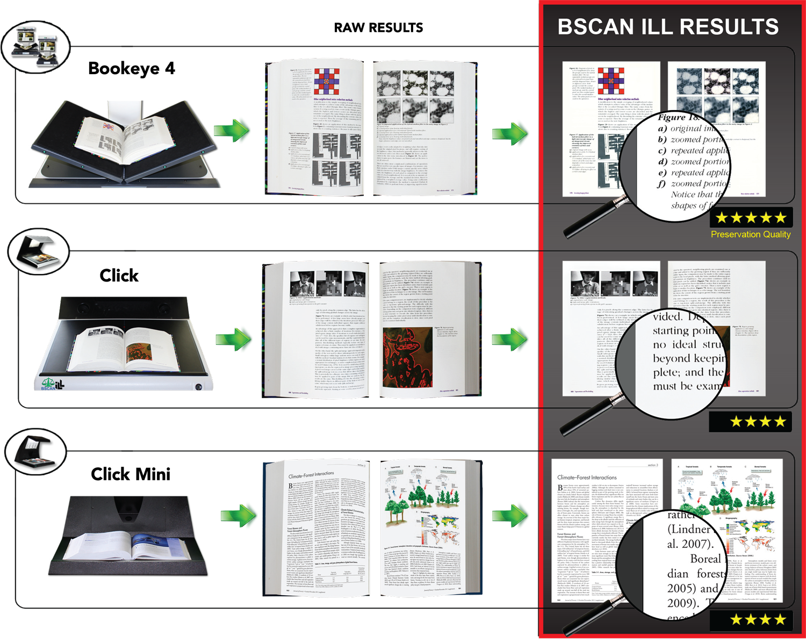Face up scanners minimize book jockeying. Fast face-up scanners like those offered by DLSG with BSCAN lLL are 3-5 times faster than the fastest face-down scanners and photocopiers. And unlike face-down scanners and copiers, DLSG scanners are designed to capture deep into the book fold, flatten book curve, split images into two pages and remove fan and gutter.
BookEdge is uniquely designed for scanning books and is the fastest face-down scanner in its price range. When used in book mode (one page at a time), this scanner flattens the page and captures deep into the fold of tightly bound journals. With BSCAN ILL, the BookEdge can also be used to scan 2 pages at a time, which is substantially faster than book mode. BSCAN ILL splits & flattens the pages, and eliminates fan, gutter & skew.
Older technologies like photocopiers and face-down scanners are concomitant with limitations that typically include:
- Difficulty Capturing Content in the Book Fold
- Significant Stress to Book Spines
- Limit to 11x17 inch Scan Area
- Black & White Paper Copies instead of Full-Color, Digital Copies
- Unsightly Skew, Fan, Gutter, & Black Borders
- Significantly Higher Cost of Operation
Scanner Selection Guide
BSCAN ILL can be purchased separately or as a complete system with
the following exceptional book digitization equipment
| Model |
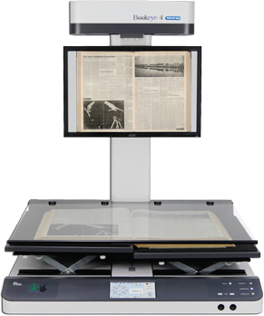
Bookeye 4 V1 |
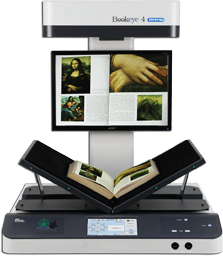
Bookeye 4 V2 |
WideTEK 25-600 |
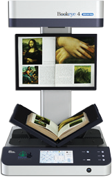
Bookeye 4 V3 |
Click |
Click Mini |
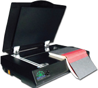
BookEdge |
|---|---|---|---|---|---|---|---|
| Max Scan Area | 33.5 x 25"  |
24.4 x 18" |
25 x 18" |
18.9 x 18" |
22 x 16"  |
19.2 x 12.3" |
17 x 11.8" |
| Bound Volume Scanning Speed in Pages Per Minute | 22 PPM 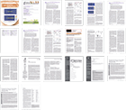 |
24 PPM 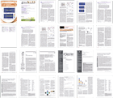 |
10 PPM 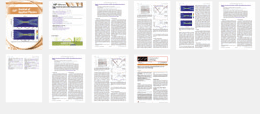 |
30 PPM  |
20 PPM |
40 PPM 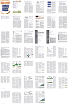 |
7 PPM 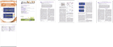 |
| Resourse Sharing Archive |
- |
- |
|||||
| Project & Course Material Creation |
|||||||
| Price | $ |
$ |
$ |
$ |
$ |
$ |
$ |
| Scalable |
Dramatically Improve ILL Digitization
BSCAN ILL supports scanners made specifically for library digitization, improves image quality, reduces keying and keying errors and fully integrates with Article Exchange, Ariel, ILLiad/Odyssey, RAPID, Article Exchange, Clio, FTP & email.In the early 1990s, the pioneers of interlibrary loan digitization had no choice but to adapt commercial scanning equipment to meet their needs. Ariel was the only available document delivery software and there were no scanners made specifically for scanning books, journals and maps. Over time, that changed. Planetary scanners became available in the late 1990s. The first release of BSCAN ILL automatically read (using OCR) the requestor information from pull slips without manual keying, supported rapid scanning and image cleanup, and automatically posted to Ariel with the press of a single button. Since then, ILLiad, Odyssey, Ariel, RAPID, Clio and Article Exchange have been integrated into BSCAN ILL with the same hands-off automation. Today, BSCAN ILL has a host of valuable features, many of which are not available with any other system.
BSCAN ILL Product Features
- Allows for export of original uncompressed images
- Supports RAPID and Clio - a BSCAN ILL exclusive
- Allows for review and rescan of images prior to delivery
- Controls nearly all scanners used for interlibrary loan and document delivery
- Automatically selects the desired document delivery method - a BSCAN ILL exclusive
- Automatically reads requestor information from pull slips -a BSCAN ILL exclusive
- Automatically sends the document without intervention by a scan operator - a BSCAN ILL exclusive
- Connect main libraries with smaller libraries
- Provides a single, simple document delivery interface for ILL scanning staff - a BSCAN ILL exclusive
- Captures original “raw” (uncompressed) images and saves them to a database on the scanner workstation
- Automatically archives documents for fast and easy retrieval if a document must be resent - a BSCAN ILL exclusive
- Automatically updates ILLiad/Odyssey, even if the request is delivered by Ariel, FTP or e-mail - a BSCAN ILL exclusive
- Automatically produces ‘printer-ready’ images (deskews, removes fan, gutter, book curve, etc.) - a BSCAN ILL exclusive
- Supports Resource Sharing to reduce ILL department cost-share
- Scale equipment capacity up or down without penalty
Out with the Old and In with the New
Traditional Face-Up Capture
[a seven-step procedure]
Modern Face-Up Capture
[a two-step procedure]
The sequence above shows just how much work is required to use a face-down scanner to scan multiple pages.
In contrast, the sequence on the left shows the relative speed and ease of face-up scanning systems that do not require the user to flip over the book being scanned. Once placing the book, the user simply turns pages and presses the scan button (or foot pedal) to scan two pages at a time.
Digital Library Systems Group
Our Focus on Libraries, Archives & Museums Produces Unmatched Value for Academic & Research Libraries
Digital Library Systems Group has been a division of Image Access since 2004. DLSG exclusively serves libraries, archives, museums, and government records keepers. This undiluted focus has allowed DLSG staff to hone unmatched skills in the service, support, design and engineering of the finest hybrid library digitization products available.
Because DLSG is able to efficiently serve these communities directly throughout the Americas, its prices are affordable for virtually any library, archive, museum or government records keeping organization.
Most vendors sell to many markets with one-size-fits-all solutions. DLSG’s singular focus on the common needs of libraries, archives and museums allows us to deliver a complete family of peerless products and services at very affordable prices.